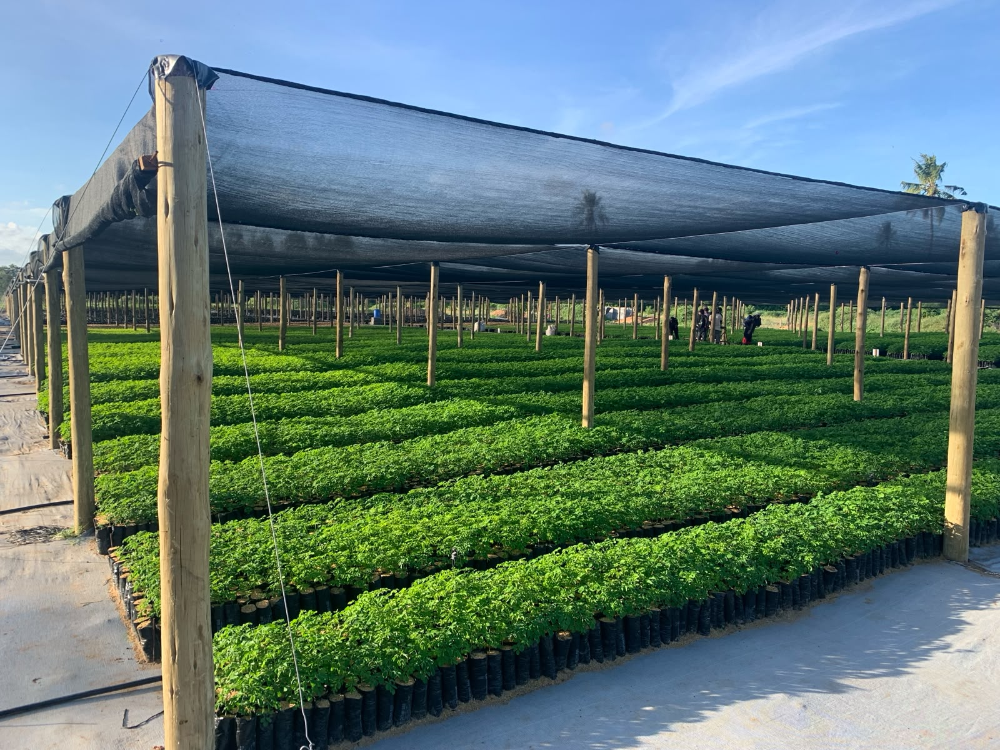
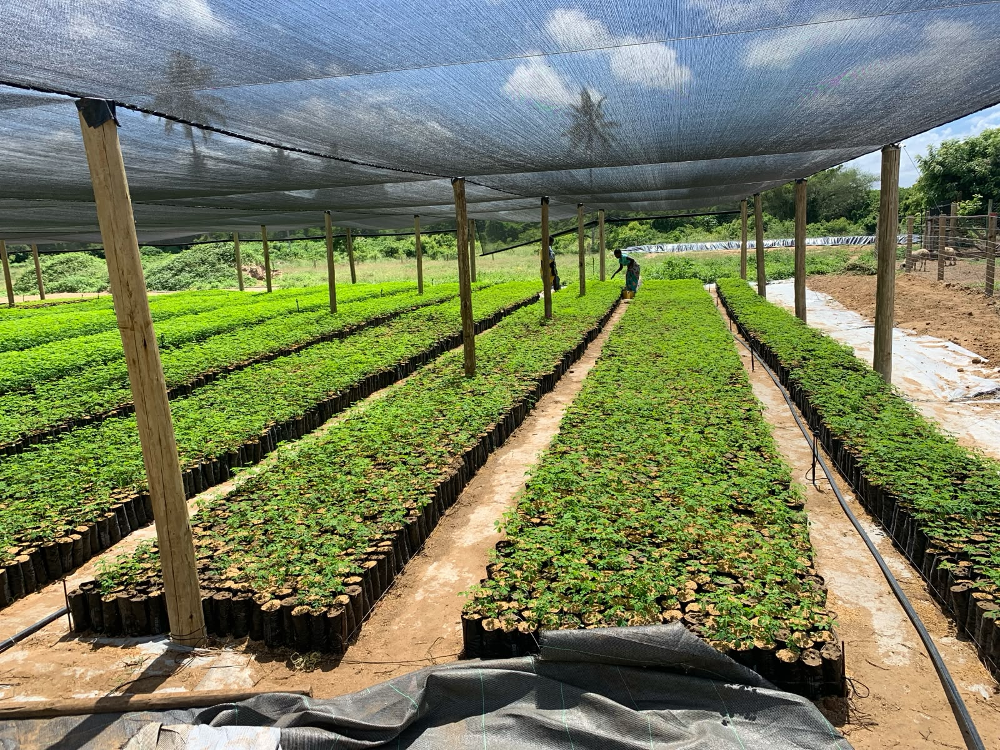
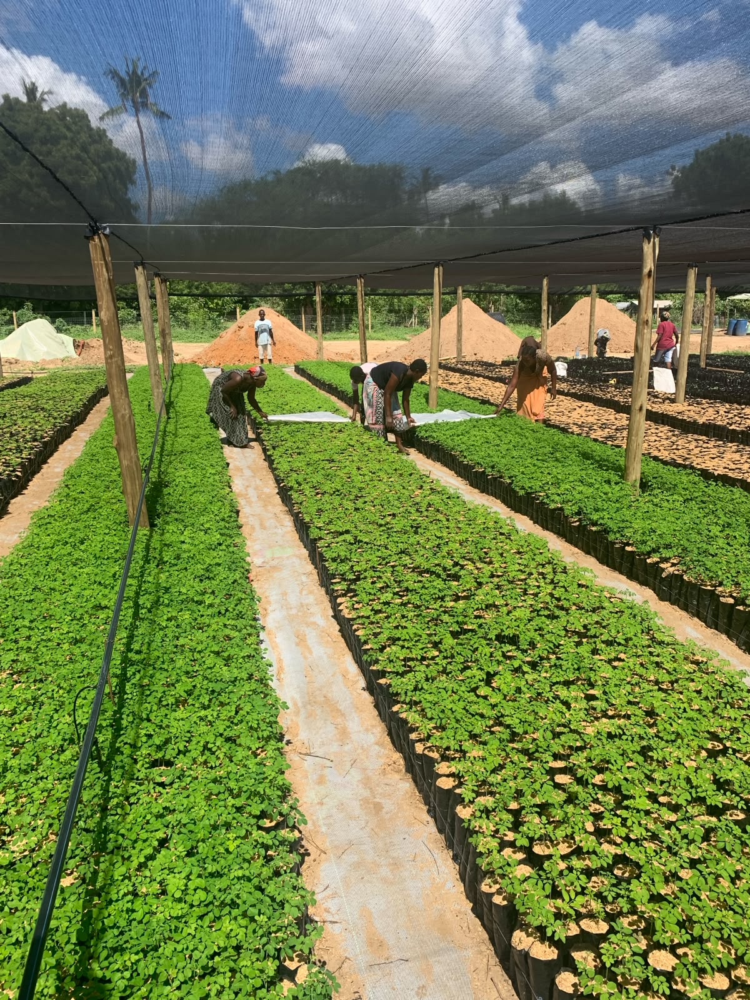

From large-scale nursery development to landscape restoration and climate-smart agriculture, our projects create lasting environmental and economic impact across Kenya.
Nursery Shadehouse
Landscape Restoration
Tree Species Propagated
Seedlings Capacity

Located at Mtwapa Agricultural Training Centre, this flagship facility combines commercial seedling production, applied research, training, and technology development.
Designed with a 7,500m² shadehouse, the nursery will produce millions of high-quality seedlings annually for restoration, agroforestry, and commercial plantation projects.
The Koromi Project near Baricho serves as Crescendo Green's flagship demonstration site for integrated landscape restoration, commercial forestry, and regenerative agriculture.
Through partnerships with local and international organizations, the site demonstrates how productive landscapes can support both economic development and ecosystem recovery.


Arabuko Farm was the original innovation hub of Crescendo Green and remains an important demonstration site for sustainable propagation, water-efficient farming systems, and climate-smart agriculture.
The farm helped establish the techniques and systems that now support the company's larger restoration and nursery operations.
We collaborate with governments, NGOs, researchers, investors, and private sector partners to scale landscape restoration and climate-smart agricultural solutions.
Get In Touch